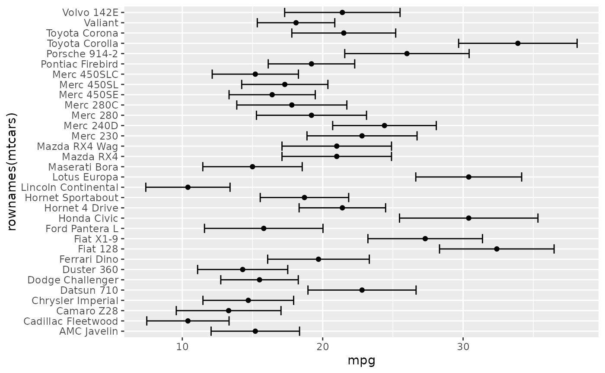
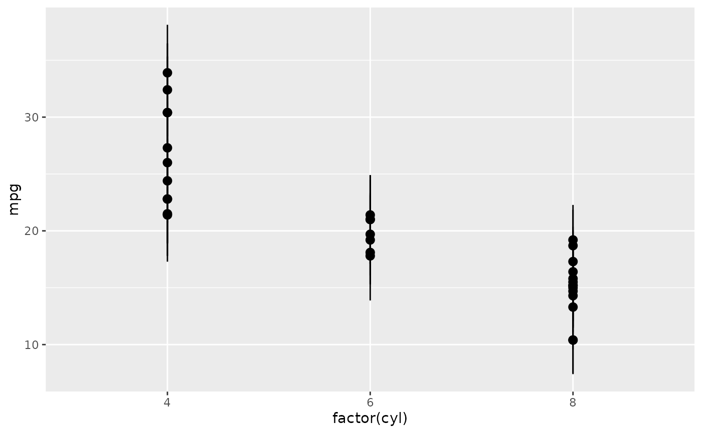
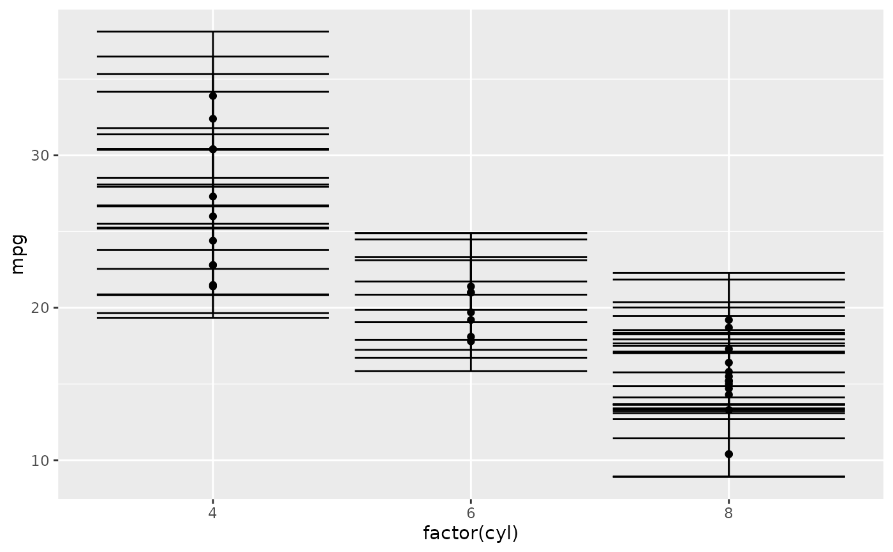
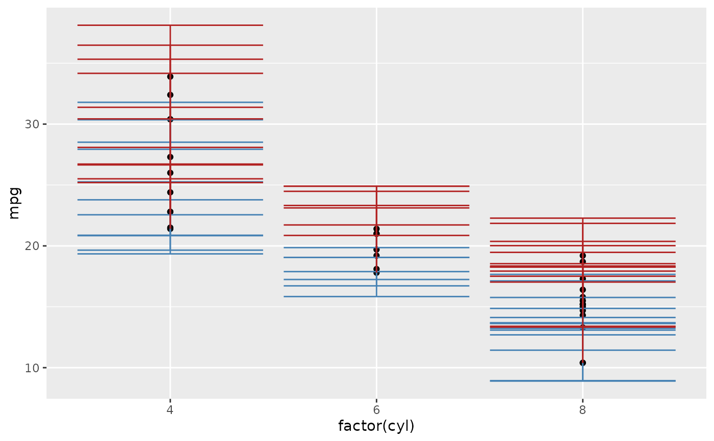
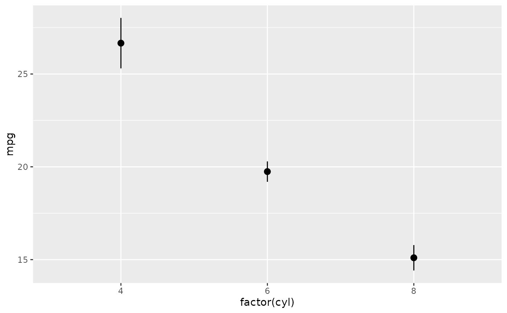
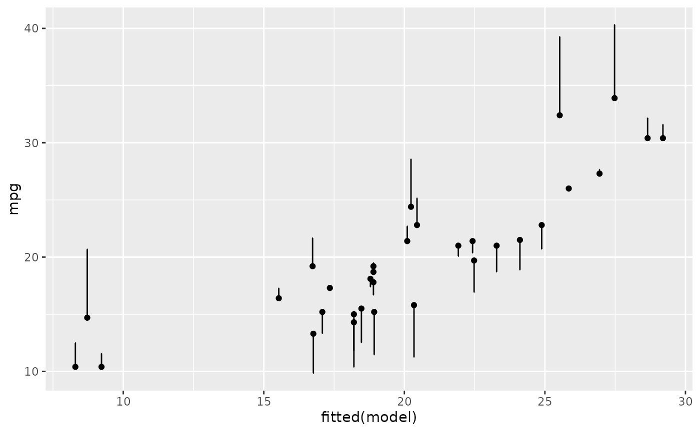
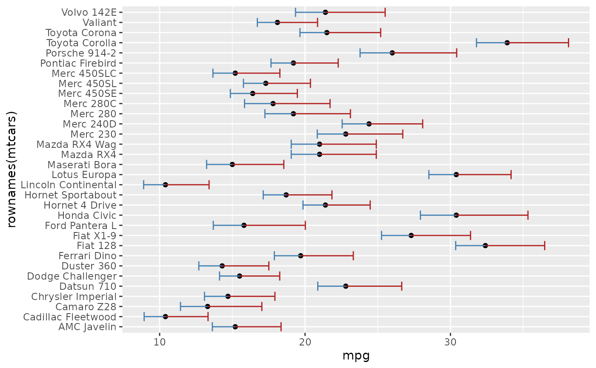

A thin wrapper around ggplot2::geom_errorbar(),
ggplot2::geom_linerange(), ggplot2::geom_crossbar(), and
ggplot2::geom_pointrange() that accepts a single error aesthetic
and figures out orientation from the data. For asymmetric errors, use
error_neg + error_pos instead of error.
Usage
geom_error(
mapping = NULL,
data = NULL,
stat = "identity",
position = "identity",
...,
error_geom = "errorbar",
orientation = NA,
sign_aware = FALSE,
na.rm = FALSE,
show.legend = NA,
inherit.aes = TRUE
)
geom_error_linerange(..., error_geom)
geom_error_crossbar(..., error_geom)
geom_error_pointrange(..., error_geom)Arguments
- mapping
Set of aesthetic mappings created by
ggplot2::aes().- data
The data to be displayed in this layer.
- stat
The statistical transformation to use on the data. Defaults to
"identity".- position
Position adjustment.
- ...
Other arguments passed on to
ggplot2::layer().- error_geom
One of
"errorbar"(default),"linerange","crossbar", or"pointrange". Chooses which ggplot2 error geomgeom_error()dispatches to under the hood.- orientation
Either
NA(the default; inferred from the data),"x"(vertical error), or"y"(horizontal error).- sign_aware
If
TRUE, signed values inerrorare routed per row: positive values extend the bar in the positive direction, negative values extend it in the negative direction, and the opposite side is suppressed. Useful for residual plots wherex/yis the fitted value and the bar extends toward the observed value. Incompatible withstat = "error". DefaultFALSE.- na.rm
If
FALSE, missing values are removed with a warning.- show.legend
Logical. Should this layer be included in the legends?
- inherit.aes
If
FALSE, overrides the default aesthetics.
Package options
Session-level knobs for the 0 -> NA migration. Set via options():
ggerror.silent_zero_warning—TRUEsuppresses the soft deprecation fired whenerror_negorerror_posis set to0(You are encouraged to set it toNA). DefaultFALSE.ggerror.zero_threshold— Numeric absolute tolerance for zero-value detection. Values with a magnitude below this threshold are treated as exactly zero, triggering the warning. Defaults to1e-8.
Aesthetics
geom_error() requires x, y, and one of:
error— symmetric half-width applied along the non-categorical axis.error_neganderror_pos— asymmetric; the bar extendserror_negin the negative direction anderror_posin the positive direction along the non-categorical axis. For a one-sided bar, set the unused side toNA— the cap, stem, and shared-bound cap on that side are all suppressed.
Mixing error with error_neg / error_pos is an error, as is
providing only one of the asymmetric pair.
Fixed per-side styling can be supplied through ... with _neg and
_pos suffixes for colour, fill, linewidth, linetype, alpha,
and width.
These are fixed scalar parameters, not mapped aesthetics.
Examples
library(ggplot2)
ggplot(mtcars, aes(mpg, rownames(mtcars))) +
geom_point() +
geom_error(aes(error = drat))

ggplot(mtcars, aes(factor(cyl), mpg)) +
geom_point() +
geom_error(aes(error = drat), error_geom = "pointrange")

# Asymmetric: bar extends drat/2 below and drat above each point
ggplot(mtcars, aes(mpg, rownames(mtcars))) +
geom_point() +
geom_error(aes(error_neg = drat / 2, error_pos = drat))

# One-sided: set the unused side to NA (cap + stem auto-suppressed)
ggplot(mtcars, aes(mpg, rownames(mtcars))) +
geom_point() +
geom_error(aes(error_neg = NA, error_pos = drat))

# Summarise raw data: mean +/- SE per group (see also stat_error())
ggplot(mtcars, aes(factor(cyl), mpg)) +
geom_error(stat = "error", error_geom = "pointrange")

# Signed residual plot: bar extends from fitted toward observed
model <- lm(mpg ~ wt, data = mtcars)
ggplot(mtcars, aes(fitted(model), mpg)) +
geom_point() +
geom_error(aes(error = resid(model)),
sign_aware = TRUE, orientation = "x")

# Style the negative and positive halves separately
ggplot(mtcars, aes(mpg, rownames(mtcars))) +
geom_point() +
geom_error(
aes(error_neg = drat / 2, error_pos = drat),
colour_neg = "steelblue",
colour_pos = "firebrick"
)
